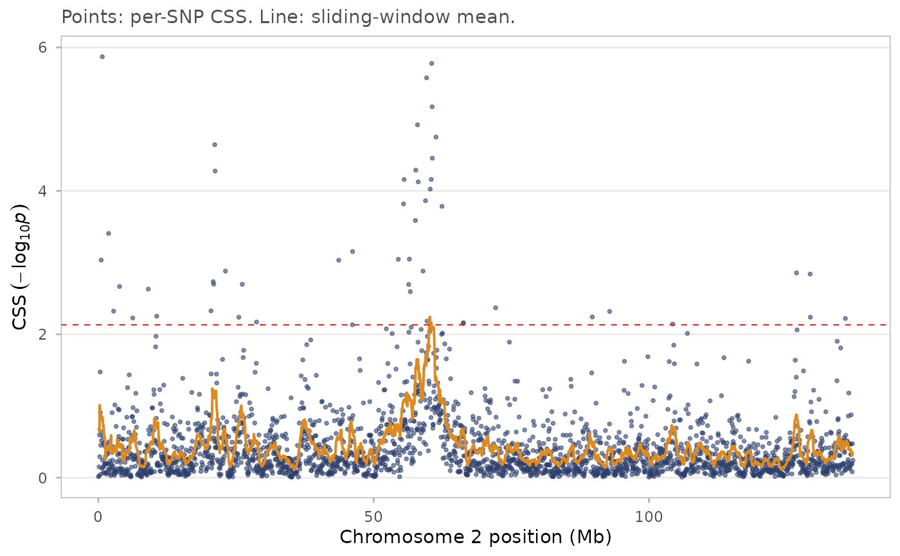

Reproduces Figure 1 of Randhawa et al. (2014): raw CSS scores as points with the smoothed score overlaid as a line, the empirical threshold as a dashed line, and candidate gene positions marked with vertical rules.
Usage
css_chrom_plot(
x,
chr,
highlight = NULL,
xlim = NULL,
units = c("Mb", "kb", "bp"),
show_raw = TRUE,
title = NULL,
subtitle = NULL
)Arguments
- x
A
css_result.- chr
Chromosome to plot. A single value matching a level of
x$chr.- highlight
Optional named numeric vector of positions to mark, for example
c(MSTN = 6213566). Names are used as labels.- xlim
Optional length-2 numeric giving a position range in base pairs.
- units
Axis units for position:
"Mb"(default),"kb"or"bp".- show_raw
Draw the unsmoothed per-SNP scores. Default
TRUE.- title, subtitle
Plot labels.
Value
A ggplot2::ggplot object.
Examples
data(css_sim_small)
res <- css(css_input(css_sim_small,
tests = c(fst = "high", xpehh = "high", ddaf = "high")))
res <- css_threshold(css_smooth(res))
#> Threshold on smoothed CSS: top 0.1% at 2.1320 (6 SNPs), top 1.0% at 1.5565 (56 SNPs).
css_chrom_plot(res, chr = 2)
